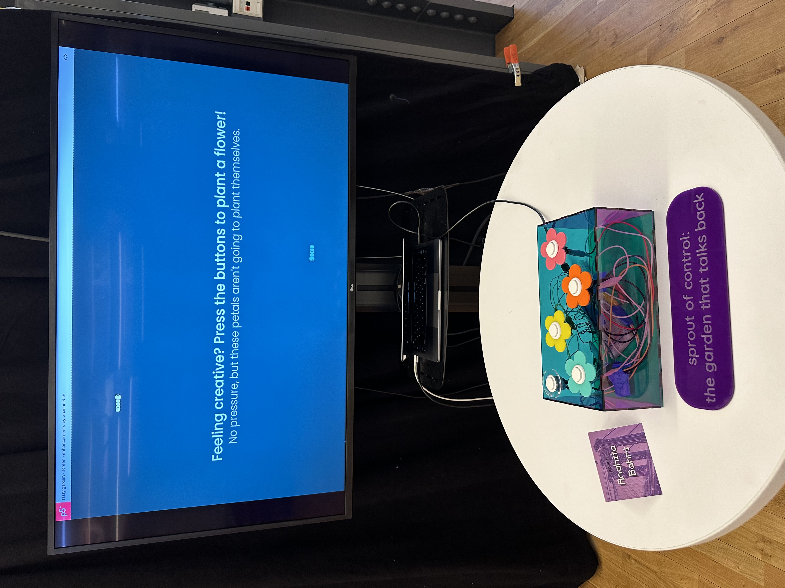

sprout of control
the garden that talks back
August 2024
My project lives at the intersection of creative coding, physical computing, and fabrication. Your girl learned all about laser cutting to create the physical controller - a nifty little box adorned with flower buttons that bring a virtual garden to life on screen. Grow your garden by creating flowers, and once you hit a magical threshold (between 10-20, randomly set), you’ll be rewarded with a sassy note. It’s not your typical garden. It comes with a mix of pop culture easter eggs and playful humor, including notes from yours truly and a few quirky contributions from Claude.AI.
Why did I create this project? It was all about skills building and having fun. I aimed to keep things light, cute, and playful, while embedding my own voice into the experience. At the showcase, I got some great feedback. People have even suggested it could be turned into a play therapy device! So, who knows what's next? Stay tuned!
While the physical controller offers the full experience, you can still enjoy the sassy garden here!
laser cutting things...